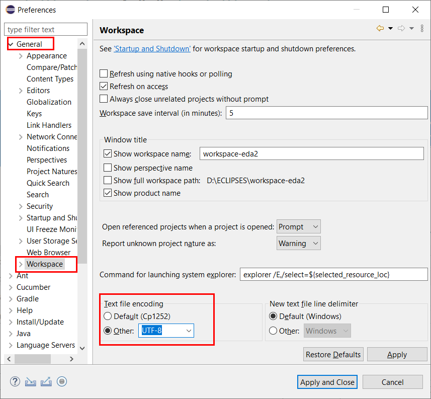

Estructuras de datos y Algoritmos II. Universidad de Almería
Version curso.2022
Objetivos
-
Mostrar la estructura correcta del proyecto Eclipse para su entrega y evaluación.
-
Describir la correcta ubicación del proyecto Eclipse dentro del respositorio GitHub.
-
Aprender a generar automaticamente la documentación en Javadoc, incluyendo diagramas de clases, mediante Maven.
Estructura del Proyecto Java en Eclipse
Esta sección pretende describir la estructura correcta de los proyectos Java creados en Eclipse para la correcta entrega de las prácticas de EDA II.
Cada práctica se resuelve en un proyecto Java en Eclipse, al que debemos a añadir una documentación adicional, y que debe tener la estructura estándar de cualquier proyecto Java en Eclipse que conocemos desde 1º del Grado.
Las carpetas que debe tener nuestro proyecto son las siguientes:
-
src: Carpeta de fuentes (source folder en Eclipse) que contendrá las clases Java en las que implementamos y resolvermos los algoritmos. Dentro de la carpetasrclas clases Java estarán dentro de un paquete con un nombre, por ejemplo,org.eda2.practicaX, sustituyendoXpor el número de práctica. -
test: Carpeta de fuentes (source folder en Eclipse) con las clases de prueba con tests unitarios en JUnit (en el caso de que los haya). Igualmente, las clases de prueba estarán dentro de un paquete con el mismo nombre que el desrc.
Hasta ahora se ha descrito la estructura habitual de los proyectos Java en Eclipse. Además, vamos a tener las siguientes carpetas:
-
datasets: carpeta con los archivos de texto que contienen los datos con los que probamos la ejecución de nuestros algoritmos. Estos archivos de datos pueden ser tanto los proporcionados por los profesores, como los que, en su caso, debamos generar como parte de la práctica, como por ejemplo se pedía en la práctica 2. -
docs: carpeta con la documentación en la que guardaremos el documento.pdfde la memoria y el resto de documentación creada, como por ejemplo la documentación en JavaDoc que describiremos más adelante. -
results: (opcional) en caso de que la ejecución de los algortimos generen archivos de texto con los resultados de la ejecución, dichos documentos de texto deben guardarse en esta carpeta.
El proyecto Eclipse de cada práctica se debe guardar como una carpeta con el nombre apropiado dentro del repositorio GitHub. Así, cada práctica se guardará en una carpeta distinta del mismo respositorio, y cada una de ellas contendrá un proyecto Java con la estructura comentada previamente.
Si necesitas repasar el uso de Git y GitHub desde Eclipse, echa un vistazo al tutorial Uso básico de Git y GitHub en Eclipse.
Generación de JavaDoc con Maven
Documentar tu proyecto es una parte importante del buen desarrollo de software.
Maven es una herramienta que permite simplificar y automatizar el proceso de construcción (build) de proyectos Java. La construcción de un proyecto Java implica varios pasos como compilar, ejecutar los tests, empaquetar el proyecto, generar documentación JavaDoc, etc.. Además, Maven permite automatizar la gestión de dependencias, de manera que una vez configurada una dependencia en Maven no será necesaria importarla manualmente en el proyecto.
En esta asignatura vamos a usar Maven para generar la documentación en formato JavaDoc a partir del código fuente de las clases Java del proyecto.
A continuación se describen los pasos necesarios.
Mavenizar el proyecto
Sobre el proyecto Java en Eclipse, botón derecho, Configure, Convert to maven project
Dejamos los valores predeterminados, y clic en Finish. Verás que se ha creado un nuevo archivo pom.xml, este contiene la configuración del proyecto en Maven.
pom.xmlConfiguración básica del pom.xml
Lo primero es configurar el pom.xml para que utilice codificación UTF-8. Esto permite la portabilidad de los fuentes entre plataformas (Linux, Windows, Mac) sin problemas en la codificación de los carateres (tildes, caracteres especiales, etc). También vamos a indicar dónde están las carpetas con los fuentes y los tests. Para ello, editamos el archivo pom.xml y añadimos las siguientes líneas.
...
<version>0.0.1-SNAPSHOT</version>
<properties> (1)
<project.build.sourceEncoding>UTF-8</project.build.sourceEncoding>
<project.reporting.outputEncoding>UTF-8</project.reporting.outputEncoding>
</properties>
<build>
<sourceDirectory>src</sourceDirectory> (2)
<testSourceDirectory>test</testSourceDirectory>
...
</build>
...| 1 | Antes de la etiqueta <build> añadimos el bloque <properties> … </properties> |
| 2 | Tras la etiqueta <build> añadimos <sourceDirectory> y <testSourceDirectory> |
|
Además, no olvides configurar tu Eclipse para que utilice UTF-8 como codificación predeterminada: Window > Preferencies > General > Workspace > Text file encoding > Other > UTF-8

Figura 5. Configuración de la codificación UTF-8 en Eclipse
|
|
Si en el proyecto aparecen errores (archivos en rojo) tras la modificación del |
Generación de JavaDoc
Para generar la documentación de las clases con JavaDoc, primero vamos a añadir el plugin JavaDoc al pom.xml, y a continuación llamaremos al objetivo (goal) de maven javadoc:javadoc. Esto generará la documentación de las clases Java en formato html en la carpeta predeterminada target/site/apidocs del proyecto.
Para ello, editamos el archivo pom.xml y en el bloque de plugins añadimos el plugin de JavaDoc:
...
<build>
<plugins>
...
<plugin>
<groupId>org.apache.maven.plugins</groupId>
<artifactId>maven-javadoc-plugin</artifactId>
<version>3.4.0</version>
</plugin>
</plugins>
...
</build>
...
</project>Ahora ejecutamos Maven para generar el JavaDoc: Sobre el proyecto, Botón derecho, Run as… , Maven build. En el campo Goals escribimos: clean javadoc:javadoc
La ejecución habrá sido correcta cuando el texto mostrado en la consola finalize con el mensaje BUILD SUCCESS:
...
[INFO] ------------------------------------------------------------------------
[INFO] BUILD SUCCESS
[INFO] ------------------------------------------------------------------------
[INFO] Total time: 6.659 s
[INFO] Finished at: 2022-xx-xxxxxxxx
[INFO] --------------------Los archivos JavaDoc generados tras la ejecución de Maven se guardan de forma predeterminada en la carpeta target/site/apidocs. Para ver su contenido, abre el archivo index.html de esa carpeta.
|
La carpeta |
Generación de diagramas de clases
Al igual que la documentación JavaDoc, con Maven se pueden crear automáticamente diagramas de clases UML a partir del código.
|
Estos pasos solamente los podrás hacer en tu propio PC o portátil, ya que los PCs del Aula no tienen instalada la herramienta Graphviz necesaria. |
Primero, descarga e instala Grahpviz en tu portátil desde: http://www.graphviz.org/download/
A continuación, actualiza la configuración del plugin JavaDoc en el archivo pom.xml para que genere también los diagramas de clases. Y añade la dependencia al plugin necesario umldoclet.
...
<plugin>
<groupId>org.apache.maven.plugins</groupId>
<artifactId>maven-javadoc-plugin</artifactId>
<version>3.4.0</version>
<configuration> (1)
<reportOutputDirectory>
${project.reporting.outputDirectory}/../../docs
</reportOutputDirectory>
<doclet>nl.talsmasoftware.umldoclet.UMLDoclet</doclet>
<docletArtifact>
<groupId>nl.talsmasoftware</groupId>
<artifactId>umldoclet</artifactId>
<version>2.0.16</version>
</docletArtifact>
<additionalOptions>
<!-- Para generar los .png para la memoria, descomentar estas 2 lineas-->
<!-- <additionalOption>-umlImageDirectory images</additionalOption> -->
<!-- <additionalOption>-umlImageFormat png </additionalOption> -->
<additionalOption>-private</additionalOption>
</additionalOptions>
</configuration>
</plugin>
</plugins>
</build>
<dependencies> (2)
<!-- https://mvnrepository.com/artifact/nl.talsmasoftware/umldoclet -->
<dependency>
<groupId>nl.talsmasoftware</groupId>
<artifactId>umldoclet</artifactId>
<version>2.0.16</version>
<scope>provided</scope>
</dependency>
</dependencies>
</project>| 1 | Bloque de configuración del plugin javadoc para que genere los diagrama UML |
| 2 | Bloque de dependencias necesarias para la generación de los diagrama UML |
Guarda los cambios y vuelve a ejecutar maven. Ahora los JavaDoc se crean en la carpeta docs/apidocs que deberás proteger en el repositorio. Verás que tus JavaDoc incluyen los diagramas de clases.
|
Recuerda que si en el proyecto aparecen errores (archivos en rojo) tras la modificación del |
Es recomendable que los diagramas de clases los incorpores en el documento .pdf de la memoria de la práctica. Para generar los diagramas como imágenes .png, descomenta las dos lineas comentadas de la configuración del plugin y vuelve a ejecutar maven. Una vez copies las imágenes .png, vuelve a comentar las dos líneas para que los javadoc se vean correctamente.
Descarga del .zip y entrega en Aula Virtual
Recuerda que para la entrega de cada práctica, debes descargar el .zip del repositorio GitHub y subirlo en la actividad correspondiente de Aula Virtual.
El .zip que se descarga desde GitHub incluye la práctica a entregar junto con el resto de prácticas anteriores, ya que todas están en el mismo repositorio. No te preocupes por ello, ya que los profesores revisaremos y evaluaremos solamente la práctica correspondiente a cada entrega.
Troubleshooting: Solución de problemas
Running on a JRE rather than a JDK
Si en la ejecución de Maven, en la consola de aparece el siguiente error:
No compiler is provided in this environment. Perhaps you are running on a JRE rather than a JDK?
En Eclipse: Window > Preferences > Java > Installed JREs Comprueba que está marcada una instalación de JDK en lugar de un JRE. Si no tuvieses instalado un JDK, debes instalarlo. Recomendable OpenJDK-11 o superior. Tras instalarlo, debes reiniciar Eclipse y añadirlo a la lista de Installed JREs.